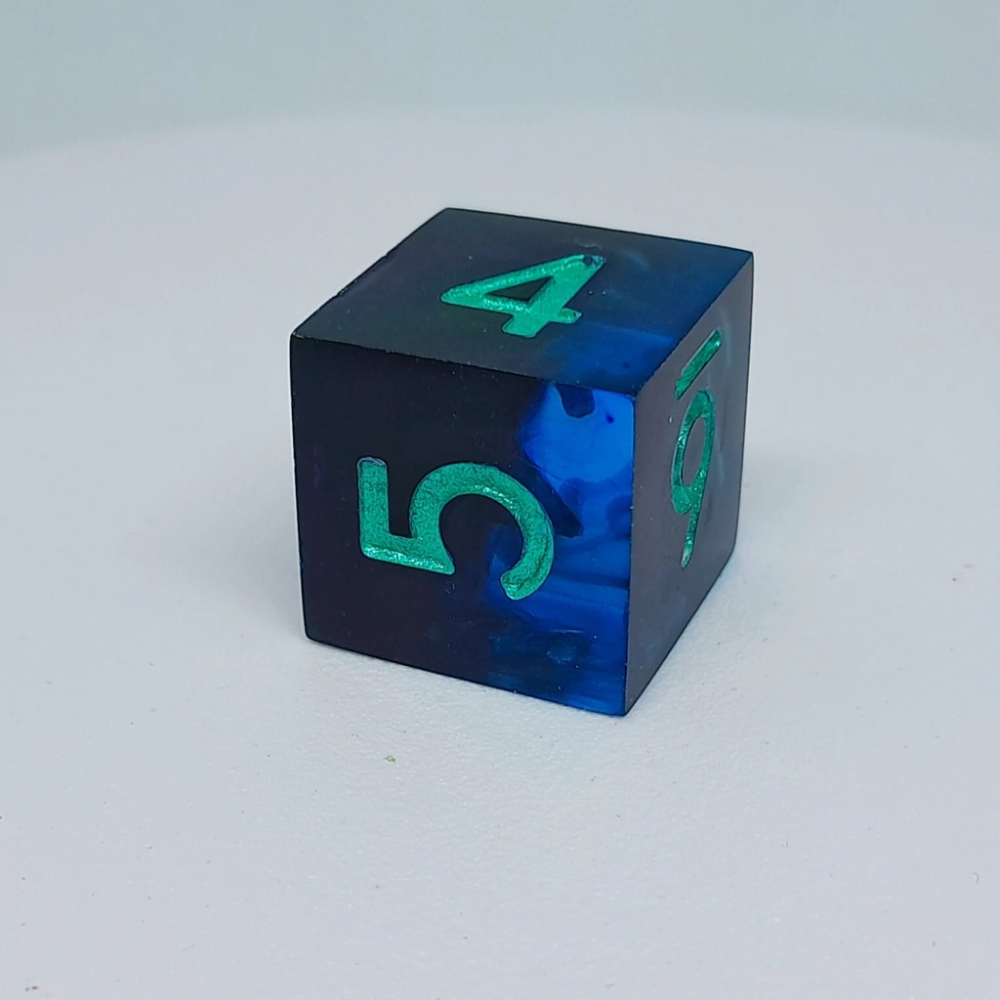
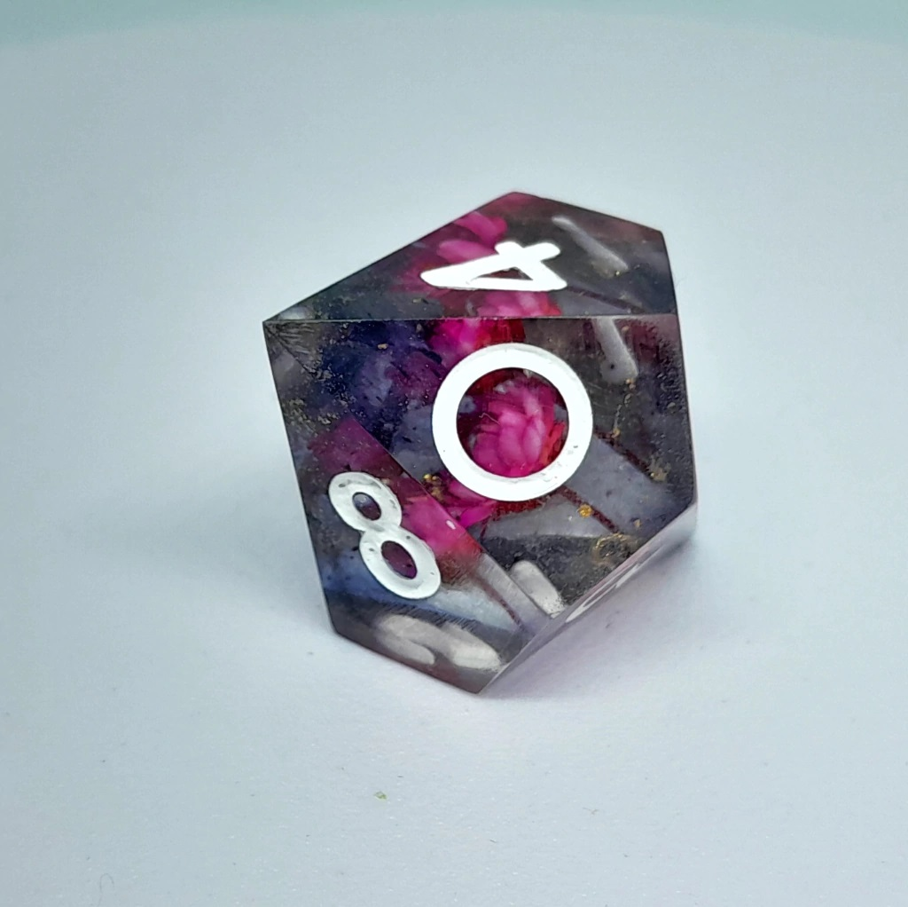
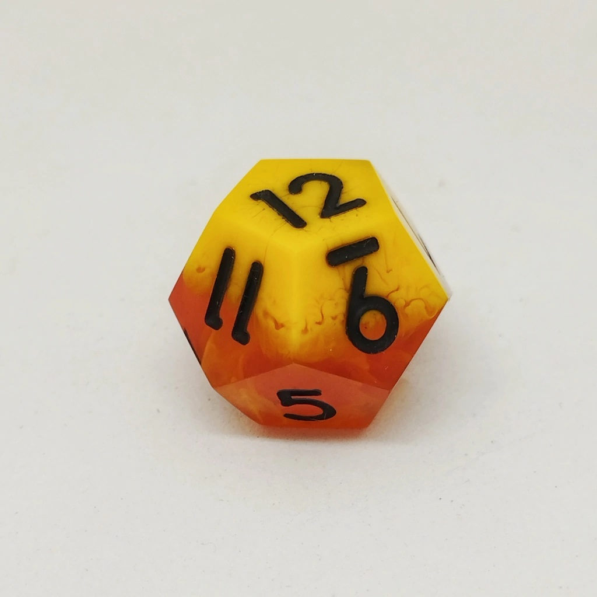
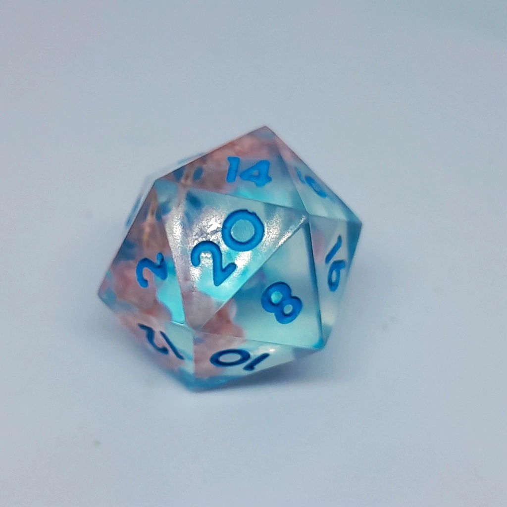

Dados
Introducción
Los dados son una herramienta esencial en muchos juegos de mesa. Desde los clásicos juegos de rol hasta los modernos juegos de estrategia, los dados añaden un elemento de aleatoriedad y emoción.
Tipos de Dados
Existen diferentes tipos de dados que se utilizan en una variedad de juegos. A continuación, se describen algunos de los más comunes:
- D6: El dado clásico de seis caras, comúnmente utilizado en juegos como Monopoly.
- D20: Un dado de veinte caras, muy popular en juegos de rol como Dungeons & Dragons.
- D10: Utilizado en juegos de mesa y de rol para generar números del 1 al 10.
- D12: Un dado de doce caras, menos común pero utilizado en ciertos juegos específicos.
Usos de los Dados en Juegos de Mesa
Los dados pueden tener diferentes funciones en los juegos de mesa:
- Movimiento: Determinar cuántos espacios se mueve un jugador en el tablero.
- Combate: Resolver batallas o enfrentamientos en juegos de estrategia.
- Decisiones Aleatorias: Generar eventos aleatorios o resultados en juegos de rol.
Galería de Imágenes




Conclusión
Los dados son una parte fundamental de muchos juegos de mesa y ofrecen infinitas posibilidades de diversión. Explora nuestra colección de dados y encuentra el complemento perfecto para tu próximo juego.